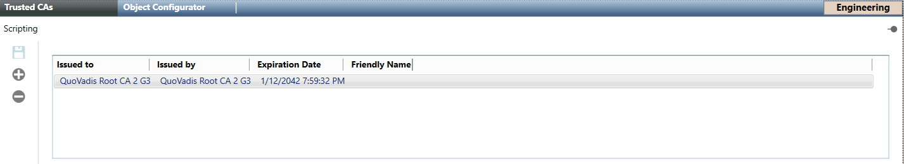

Trusted CAs Workspace
In Engineering mode, when you select Project > Management System> Servers > Main Server > Scripting object, the Trusted CAs tab is displayed that lets you configure the trusted certificate authorities that will validate the scripts signatures.

Trusted CAs Toolbar
Save | Save the changes. |
Add a new certificate | Add a new trusted certificate authority. |
Remove certificate | Remove the selected trusted certificate authority. |